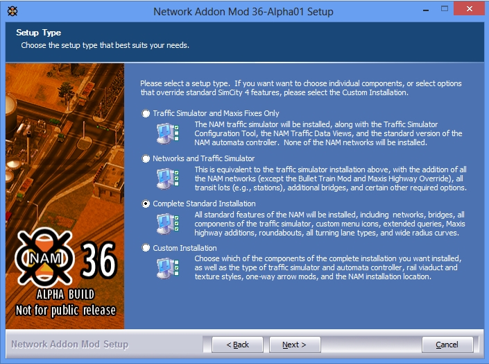

Network Addon Mod将在满足SimCity 4 Deluxe / Rush Hour最低系统要求的任何系统上运行。大多数现代PC应该能够轻松运行该mod。 为了完全解压程序安装包，至少需要1.2GB的硬盘空间，但实际安装大小可能从1.7MB到850MB不等，具体取决于所选的选项。
Network Addon Mod与以下版本的游戏兼容：
- A) SimCity 4豪华版或SimCity 4 尖峰时刻扩展包的零售Windows光盘副本，至少更新为版本1.1.638。
- B) SimCity 4豪华版或SimCity 4 尖峰时刻扩展包的零售Windows数字零售版，包含来自所有的数字零售商不包括Origin(版本 1.1.641), (比如 GOG.com, Steam, Amazon)。
- C) 通过CD Key从Origin Customer Support兑换的SimCity 4 豪华版的数字Windows副本。
- D) 通过Steam或App Store购买的零售MAC数字副本的SimCity 4。（注意：针对macOS上的NAM的特定于平台的技术支持非常有限）。
- E) 在macOS / OS X版本10.6（Snow Leopard）或更早版本上运行的SimCity 4 豪华版零售Mac光盘副本。（注意：针对macOS上的NAM的特定于平台的技术支持非常有限）。
Network Addon Mod 不与 以下版本的游戏兼容, 这将阻止NAM安装程序运行到成功:
- F) 没有打补丁的SimCity 4 豪华版或 SimCity 4 尖峰时刻扩展版的零售硬盘版(版本 1.1.610 或 1.1.613)。
- G) 从Origin购买的SimCity 4豪华版的Windows数字版.
- H) 非SimCity 4豪华版的零售硬盘版(有时以“ SimCity 4 Classic”的形式销售), 不含尖峰时刻扩展包的版本(版本 1.0.272 or 更早的版本)。
- I) 使用Aspyr通用二进制Beta补丁零售版SimCity 4 Deluxe的Mac光盘副本，尤其是在macOS / OS X版本10.7（Lion）或更高版本上。
- J) SimCity 4 Deluxe或SimCity 4 尖峰时刻扩展版的盗版或破解副本。
如果NAM安装程序拒绝我的游戏版本，该怎么办？
在F情况中，解决方案只需要安装EP1 Update 1补丁程序，可以从EA（SKU 1-5），SimCity 4 Devotion（SKU 1-5）或Simtropolis（仅SKU 1和2）下载。 为您的SimCity 4副本确定正确的SKU版本，找到安装目录，然后查看名为 sku_data 的子文件夹。 或者，您可以简单地尝试该补丁的所有SKU版本，直到一个可行为止。
对于情况G, 查看下面的关于Origin 。
对于H、I、J，建议您购买SimCity 4 Deluxe的数字副本（但不能从Origin上购买）
如果我的光盘副本在Windows Vista，7、8、8.1或10上停止运行怎么办？
微软在2015年认为secdrv.sys（一种安全光盘和其他光盘复制保护系统所使用的驱动程序文件，从2000年代开始在许多PC游戏中使用）是一种安全威胁。 所以该驱动程序未包含在Windows 10中，Microsoft发行了Windows Update KB3086255，该更新在Windows Vista，7、8和8.1上禁用了secdrv.sys。 在较旧的Windows版本中，可以在需要时通过使用命令提示符或批处理文件来重新启用secdrv.sys。
除了手动为Windows 10签名设备驱动程序的高级步骤外，唯一可行的做法是购买游戏的零售数字副本（非Origin）， 或通过Origin Customer Support免费兑换CD密钥（ 与从Origin购买不同，这会让您收到正确修补的SimCity 4 Deluxe版本。
如上所述，当NAM在游戏的安装目录中检测到破解的可执行文件（比如“No CD” .exe）时，将不会安装NAM。 NAM团队不支持盗版，但了解到由于Microsoft阻止了游戏的原始DRM系统而感到沮丧，因此他们不得不购买新的数字副本才能继续玩。 但是，阻止破解的可执行文件的原因是出于更实际的原因，即潜在的版本不匹配（例如，版本1.1.638带有1.1.610 / 613.DAT文件的破解，反之亦然）， 这可能会使情况更加复杂团队努力为用户提供有用的技术支持。 Origin issues在我们保持版本检查方面也发挥了作用。
译者注：这段不想翻译，仅给出机器翻译
除了2014年至2015年的短暂时期外，Electronic Arts（EA）运营的数字零售平台Origin一直在向零售客户销售SimCity 4 Deluxe的有缺陷副本。 从NAM 36版本开始，情况似乎仍然如此。与GOG.com，Steam和Amazon出售的零售版本（“ Thin Game Download”版本）已预先修补到1.1.641版本不同， Origin零售副本是1.1.610版本。通过为他们自己的DRM切换原始的SafeDisc复制保护，Origin更改了游戏可执行文件的校验和， 从而阻止了EP1 Update 1补丁程序（他们制作的软件）的运行。 这不仅会阻止NAM的安装，还会使Origin零售副本保留开发人员在2003年修复的所有错误。实际上，Origin零售副本是未修补且不可修补的。
NAM团队建议您联系原始客户支持以获取退款，即使在退货期到期后也是如此，因为在这种情况下用户已经获得了成功。 如果您是对未打补丁和无法打补丁的Origin零售版感到不满意的用户之一，那么我们也希望收到您的来信， 因为我们强烈希望看到Origin为他们的客户提供正确打补丁的游戏副本，并且尝试记录受影响的用户数量。
NAM中保留版本检查的部分原因是作为一种杠杆策略，使Origin可以做正确的事情。通过阻止破解的可执行文件安装NAM，NAM团队实际上是通过阻止人们盗版其游戏而对电子艺界有所帮助。
奇怪的是，尽管同一个支持团队例行告诉那些购买了副本并收到有缺陷的1.1.610版数字副本的支持小组，但通过原始客户支持（案例C）免费赎回现有CD密钥而获得的副本却得到了适当的修补。 （但是，最近有一些报告说，CD密钥的兑换已经结束。）
为了更详细地评估Origin的状况，NAM开发人员Tarkus在他的博客 SimTarkus广泛地撰写了有关该主题的文章 。
Windows用户
当下载后最初打开NAM程序包时，将显示两个文件： read-first-nam36.html 和 NetworkAddonMod Setup 36.exe.
NetworkAddonMod Setup 36.exe即为NAM安装器, 安装NAM需要运行该程序. 如果您的系统中使能了用户访问控制(UAC)，Windows可能会要求您以简单的“是” /“否”提示来批准运行文件。单击“是”以允许安装程序运行。
注意：由于程序打包方面的某些改进，NAM安装程序不再包装在7压缩自解压存档中，与过去的几个版本相比，大大简化了该过程。
Mac用户
注意:由于团队资源有限，并且当前NAM团队成员对Mac版本的游戏缺乏了解，因此Mac专有的技术支持非常有限。与Mac有关的最佳查询资源是Simtropolis SC4 Mac用户板块.
Mac平台上的NAM安装程序实质上是Wineskin包装器中包含的Windows安装程序。 这使Mac用户在安装mod时具有与Windows用户大致相同的体验，尽管因此有些奇怪。
MAC下，当下载后最初打开NAM程序包时，将显示两个文件：read-first-nam36.html 和 NAM36MacWrapper.dmg.
译者注：机翻。.
- 双击文件“ NAM 36 Mac Wrapper.dmg”.dmg文件展开后，双击 NAM36MacWrapper.app 以执行打包的NAM安装程序。
- 当您浏览安装过程时，安装程序将显示一条弹出消息，询问您是否尝试将NAM移植到Mac。 选择“是”。
- 在定制安装中，安装程序允许您更改安装的默认路径。
请勿更改默认路径。
默认安装将在 "~/Documents/SimCity 4/Plugins/Network Addon Mod". 如果那是您的插件所在的位置，那么一切都很好。 但是，如果没有，安装过程完成后，您将必须将文件夹“ Network Addon Mod”和“ z___NAM”移动到实际的插件文件夹中。 （高级用户将需要在“~/Documents/SimCity 4”处创建符号链接。） 之所以需要这样做，是因为目前无法更改NAM的某些安装路径，因此它们总是会保留在默认位置。 因此，这种方法可确保您的安装不会丢失基本文件。
插件文件夹的位置是 "~/Documents/SimCity 4/Plugins" 对于 Steam 硬盘版， "~/Library/Containers/com.aspyr.simcity4.appstore/Data/Documents/SimCity 4/Plugins"中， 对于 App Store 版.
要显示主文件夹中的Library文件夹，请在Finder中打开“转到”菜单，并按住Option（Alt）键。 然后，“库”文件夹将出现在该菜单中。 - 在安装过程中，安装程序将显示一条弹出消息，报告其未能构建定制控制器。 忽略这个。 您将获得功能齐全的控制器。 重新发行Mac时，较大的控制器文件的影响不如原始Windows版本严重。
控制器编译器失败的原因是它是基于Java的，并且即使您在系统上安装了Java，也无法在此时与打包的安装程序进行交互。 需要自定义控制器的高级用户可以运行编译器的独立版本（请参见下面的B点）。 - 安装过程完成后，如第4点所述，将文件夹“ Network Addon Mod”和“ z___NAM”复制到您的plugins文件夹中（如果它不在默认位置中）。还请注意DatPacking情况，因为它与 游戏Mac端口中的错误。
- 享受NAM。 :)
附加说明：在Mac上手动运行Controller编译器（高级用户）
如果您知道自己在做什么，请打开文件夹 "~/Documents/SimCity 4/NAM Auxiliary Files/Tools/Controller Compiler/" 并双击文件“ NAMControllerCompiler.jar”。 从当前“ Controller Compiler”目录中选择“输入”文件夹“ Network Addon Mod / Controller /”，并在插件中选择“输出”文件夹“~/ Documents / SimCity 4 / Plugins / Network Addon Mod /”。 对于其他内容，请遵循编译器的说明。
如果要从老版本的NAM升级，不要卸载或删除老版本的NAM。 NAM安装程序可以通过查阅现有的文件夹结构来检测您以前的安装选项，因此，可以安全（并且强烈建议）将NAM 36安装在旧版本之上。 此功能可确保在运行NAM 36安装程序时，默认情况下将加载先前安装的设置。 但是，如果删除了以前的安装，则可能不记得确切选择了哪些选项，并且NAM Installer不会记录以前的安装，这可能会导致游戏产生问题，例如缺少物品。
一般而言，NAM团队会尽一切努力确保新版本至少保留某种形式的“旧版支持”，以使使用任何以前的NAM版本构建的城市都可以在最新版本中继续正常运行。
如果您使用SC4DatPacker或JDatPacker之类的工具合并了NAM文件，请在参考这里。
NAM Installer允许进行几种不同类型的安装，包括一些现成的预设以及自定义安装。
预设安装
注意：计划为将来的NAM版本重新调整安装预设。 由于NAM安装程序能够读取现有选项并在“自定义安装”中自动选择相同的设置，因此，如果需要的话，仍然可以保留其现有配置。
除了“自定义安装”选项外，还有三个可用的预设选项： （1）仅交通模拟器和Maxis修复； （2）交通网络和交通模拟器；以及 （3）完整标准安装。 第一种选择是尽可能地减少NAM的安装，因为它仅包括（交通模拟器）Traffic Simulator的改进和对基本游戏项的修复，而不包括NAM对交通网络系统的任何其他扩展。 第二个选项将安装第一个选项中的所有内容，并添加NAM的大多数交通网络选项覆盖基础交通网络，但忽略诸如转弯车道和环岛。 第三个选项包括第二个选项中的所有内容，但增加了转弯车道和环岛，但不包括诸如Bullet Train Mod（BTM）和Maxis Highway Override（MHO）之类的装饰性外观设计以及诸如Level 3和Level 4等更高级的RealHighway（RHW）。 下面是每个选项包括的完整列表。请注意，您可以进入“自定义安装”，选择这些预设之一，然后将其用作安装的起点。如果您想使用一种预设，但又希望安装一个或两个附加功能（比如欧洲纹理），则此功能特别有用。
自定义安装选项
“自定义安装”向用户打开了所有NAM选项，包括高级选项。
如上所述，尽管NAM安装程序在“自定义安装”中具有与驾驶侧相关的一系列复选框，但值得重申的是，这些框仅更改随NAM安装的兼容性文件，不会修改驾驶侧。 如果您安装的是“右手驾驶”（RHD，指的是在道路右侧行驶的车辆，该概念与驾驶车辆时坐的位置不相同）， 并且希望 切换到“左手驾驶”（LHD，在道路左侧行驶的车辆），通常需要通过调整游戏的本地文件，然后编辑游戏的Windows注册表项或修改游戏的快捷方式来完成。
NAM安装程序通过读取Windows注册表标志来确定安装的默认驾驶侧，并相应地自动选择适当的复选框。 如果您是通过修改游戏的快捷方式而不是编辑Windows注册表来更改驾驶侧的， 那么这是唯一一种情况，需要更改此处选中的框。。
由于计算机系统的变化以及NAM主控制器文件的不断扩展，在2013年，人们使用许多新系统（尤其是具有4GB以上RAM且运行64位版本Windows的系统）需要更多容纳空间。 为此，NAM包含一个“ 4GB补丁”，也称为“Large Address Aware (LAA) Patch”，它使游戏可以访问32位应用程序可以读取的完整4GB RAM，而不是 默认为2GB。 NAM的补丁程序是由NTCore设计的，并在获得许可的情况下内置到安装程序中，具有需要该补丁程序的系统的用户将在NAM安装过程中收到提示以进行安装。 原始补丁可以在这里找到。
此修补程序唯一要做的就是控制Large Address Aware开关（所有Windows可执行文件中都存在的可访问开关）从游戏的可执行文件的“关闭”切换为“打开”。 这样的补丁在游戏Mod社区中很常见，包括与Skyrim，Fallout和Morrowind相关的补丁，可用于在具有64位操作系统和适当数量的RAM的系统上增强任何32位应用程序的性能。
译者注，以下为机翻
用于NAM的Mac安装程序的当前版本只是Windows版本安装程序的Wineskin包装。 尽管在大多数情况下，这样做确实允许Mac用户获得与Windows用户相同的安装体验，但是安装程序的某些功能在Mac上不起作用。 其中之一是NAM Controller编译器的自动运行，它仅包含处理已安装选件所需的网络规则（RUL）代码。 Controller Compiler无法运行时的故障安全行为是安装完整的，预编译的NAM Controller版本，其中包括所有现有代码。 控制器编译器失败的原因是它是基于Java的应用程序，并且即使您在系统上安装了Java，也无法在此时与打包的安装程序进行交互。
如果您是高级用户，并且想要减少在Mac平台上安装NAM的数量，则在安装NAM之后仍然可以运行NAM Controller Compiler（跨平台应用程序）。 打开文件夹“~/Documents/SimCity 4/NAM Auxiliary Files/Tools/Controller Compiler/”， 然后双击文件“NAMControllerCompiler.jar”。 从当前“Controller Compiler”目录中选择“input”文件夹“Network Addon Mod/Controller/” ， 然后选择“output”文件夹”~/Documents/SimCity 4/Plugins/Network Addon Mod/“ 。 对于其他内容，请遵循编译器的说明。
译者注，以下为机翻
鉴于SimCity 4倾向于读取较小数量的较大文件而不是读取较大的文件，因此，用于合并有价值的SimCity 4 .DAT文件的文件夹的程序 （例如SC4DatPacker（Windows）和JDatPacker（跨平台））是提高游戏性能的常用选项。 大量的小文件-由BSC团队在2006年的“Miramba Experiment”确定。事实上，在NAM安装上使用“ DatPacking”程序是一个有争议的话题。 NAM团队的一般建议 Windows 用户避免使用DataPacking（除非特别注意）， 而对于 Mac 用户，实际上是使用了JDatPacker 。
通常，如果计划安装DatPack的NAM，则还应将DatPacked之前的NAM文件夹预先保存在Plugins文件夹之外的安全位置， 然后删除DatPacked版本并在升级到DatPacked之前移入DatPacked之前的版本。 新的NAM版本，或更改同一版本中的选项。 这样做的原因是为了避免潜在的冲突和问题，例如新安装和旧安装之间的“双重图标错误”和Controller文件冲突， 并使其成为NAM Installer可以在升级时检测到以前的安装设置。.
对于Mac平台的Aspyr端口，它具有一个奇怪的怪癖，即在Plugins文件夹中超过一定数量的文件或文件夹（无论大小）都会导致游戏变慢甚至崩溃到桌面（CTD） 。 为此，在Mac上安装NAM之后必须使用JDatPacker，以确保适当的游戏性能。 但是，同样，应该将其之前的DatPacked NAM安装保存在Plugins文件夹之外的安全位置，以便于升级。
要卸载NAM，只需从您所在城市中删除本下载的所有NAM项，然后从Plugins文件夹中删除文件， 这些文件将默认包含在Plugins\Network Addon Mod和Plugins\z ___ NAM中。 或者，默认情况下，可以使用位于Plugins\Network Addon Mod中的随附的Uninstaller uninst.exe，但是实际上不建议这样做。
在任何情况下，请勿移动卸载程序（uninst.exe）并尝试从默认NAM安装目录以外的其他目录运行该卸载程序。
它使用递归算法，如果在其他位置运行，可能会导致意想不到的后果（即删除非NAM文件）。
NAM是一个非常广泛的mod，具有很多功能，最初可能会让那些不熟悉其工作原理的人不知所措。
NAM团队期望用户，尤其是不熟悉NAM的用户，在他们了解有关Mod的内容和功能的更多信息时，再去更改已安装的功能集。 为此，我们鼓励用户在初次安装后随手保存当前版本的安装程序。
如果您打算更改特定的选项集（就像从早期版本升级一样），我们强烈建议您不要删除或卸载现有的NAM副本。
相反，只需加载NAM Installer并直接在旧安装的进行覆盖安装。
安装程序可以阅读现有安装的内容，从而使您有机会详细了解当前的选项集，并允许您对要在新安装中进行的更改做出明智的决定。